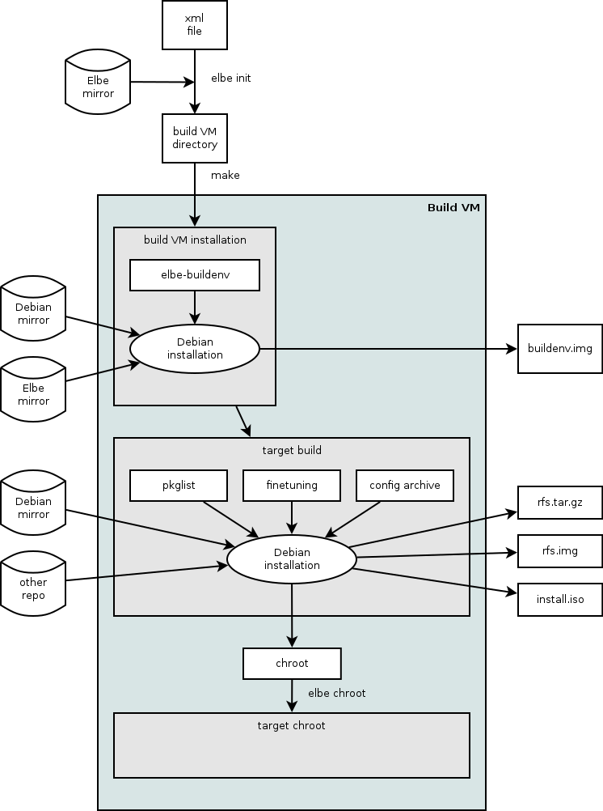
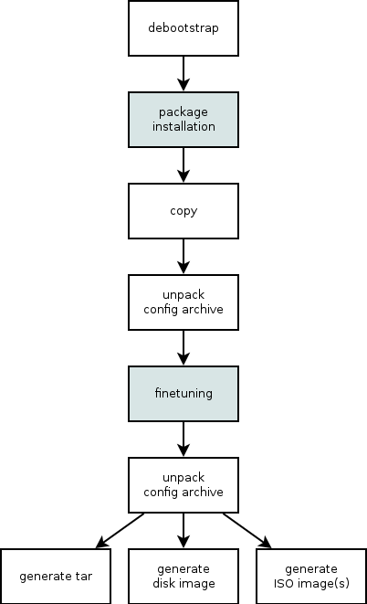

echo 'deb http://debian.linutronix.de/elbe jessie main' >> /etc/apt/sources.list.d/elbe.list
Debian based system to generate root-filesystems for embedded devices.
Generally root-filesystem creation faces the following requirements:
Creation of root-filesystem for a specific architecture.
Generation of a development environment for the specific architecture.
Trying to solve this via cross-compilation of the required packages,
we face the following problems:
Many packages are not designed and tested for cross-compilation.
Big projects consume a significant amount of time to cross compile.
Dependencies are not resolved automatically. The developer is required to
manually find out which package versions of dependencies are required.
Changes and patches to the packages need to be updated for newer versions.
This process makes an update a very time consuming process.
One must make sure that the same toolchain is used in the development
environment and in the root-filesystem.
Elbe takes a different approach for solving these problems:
Standard packages are not self compiled.
Elbe uses the Debian distributions binary packages.
Own applications are not cross compiled.
They are built natively on the target architecture in a chroot environment
using qemu.
The root-filesystem is a subset of the Debian system inside the chroot
environment. This implicitly ensures, that the same toolchain is used
on the development machine and on the target.
Updating, adding or removing a package is done via Debians package-management
(apt) which also resolves package dependencies.
Elbe is shipped as Debian package. This package will pull in the necessary
dependencies.
Configure /etc/apt/sources.list.d appropriately:
echo 'deb http://debian.linutronix.de/elbe jessie main' >> /etc/apt/sources.list.d/elbe.list
Optionally the public key for the repo can be installed:
wget http://debian.linutronix.de/elbe/elbe-repo.pub && apt-key add elbe-repo.pub
Update the package list:
aptitude update
and install elbe using the following command:
aptitude install elbe
The Elbe system consists of the program elbe which is implemented
in Python. Similar to git, it can be called with several sub commands.
For example:
elbe <command> elbe initvm create --directory /scratch/example example.xml elbe chg_archive example.xml archive.tar.bz2
An Elbe project consists of an XML file that describes the project.
This xml File is processed inside a virtual machine, because we need root
privileges to create the Rootfilesystem.
This virtual machine is called initvm in the following text.
When an xml File is now submitted into the initvm, the following happens:
Debian’s debootstrap utility is used to setup a Debian base system.
The packages specified in the package list of the XML file are installed
to the base system. The result of this is called the build environment.
A copy of the environment is used as the target system.
There is a set of different modes for this copy.
If the XML file contains an archive, it will be unpacked into the target, so
the fine-tuning commands can use the content of the archive, too.
Inside a chroot environment, the fine-tuning commands are applied to the
target.
The archive from the XML file is unpacked again. This is to ensure the target
filesystem contains all files from the archive, even if some of them have
been deleted by a fine-tuning command.
According to what is specified in the XML file, the target filesystem is then
baked into a tar archive and/or a filesystem image.
This diagram illustrates the complete process:

The following figure shows the steps performed inside the build VM during the
build process of the target. The highlighted steps are performed inside a
chroot environment:

To create an initvm and make that initvm build a first Rootfilesystem,
use the following command:
elbe initvm create --directory ~/elbe-initvm /usr/share/doc/elbe-doc/examples/x86_32-pc-hdimg-minimal-grub-wheezy.xml
This will take quite a while.
The initvm will keep on running, after this command. Further xml Files may be built using
elbe initvm submit --directory ~/elbe-initvm /usr/share/doc/elbe-doc/examples/x86_32-pc-hdimg-minimal-grub-wheezy.xml
If you need to start the initvm again, use
elbe initvm start --directory ~/elbe-initvm
A root-filesystem-project is described with a XML file.
Elbe ships with a set of example XML files.
The following XML file describes a simple system in the default full copy mode.
The root filesystem is essentially identical to the build environment and it
will be saved as nfsroot.tar.gz
<ns0:RootFileSystem xmlns:ns0="https://www.linutronix.de/projects/Elbe" xmlns:xsi="http://www.w3.org/2001/XMLSchema-instance" created="2009-05-20T08:50:56" revision="6" xsi:schemaLocation="https://www.linutronix.de/projects/Elbe dbsfed.xsd"> <project> <name>ARMexample</name> <version>08.15</version> <description>full featured debian system</description> <buildtype>armel</buildtype> <mirror> <primary_host>debian.tu-bs.de</primary_host> <primary_path>/debian</primary_path> <primary_proto>http</primary_proto> <url-list> <url> <binary>http://debian.linutronix.de/elbe wheezy main</binary> </url> </url-list> </mirror> <noauth /> <suite>wheezy</suite> <buildimage> <kinitrd>elbe-bootstrap</kinitrd> </buildimage> </project> <target> <hostname>myARM</hostname> <domain>tec.linutronix.de</domain> <passwd>foo</passwd> <console>ttyS0,115200</console> <package> <tar> <name>nfsroot.tar.gz</name> </tar> </package> <finetuning> </finetuning> <pkg-list> <pkg>bash</pkg> <pkg>openssh-server</pkg> </pkg-list> </target> </ns0:RootFileSystem>
To generate the project directory from the XML file the following command is
used:
elbe initvm submit --directory ~/elbe-initvm example.xml
The directory ~/elbe-initvm must contain a running initvm.
If an initvm has not been created yet, use:
elbe initvm create --directory ~/elbe-initvm example.xml
Elbe has several methods to select the subset that is packaged as the
root-filesystem.
The finetuning section allows to remove, copy or move files before the
archive will be extracted and the target image is generated.
The norecommend tag.
The initial copy has several modes, which allow to extract very small subsets.
The embedded archive.
The finetuning section allows to copy, move and delete files in the
root-filesystem. Additionally it is possible to run commands. Here is an
example finetuning section:
<finetuning>
<rm>/usr/share/doc</rm> (1)
<mkdir>/mydir</mkdir> (2)
<mknod opts="c 1 5">/dev/zero</mknod> (3)
<buildenv_mkdir>/mydir</buildenv_mkdir> (4)
<cp path="/copy/me">/my/destination</cp> (5)
<buildenv_cp path="/copy/me">/my/destination</buildenv_cp> (6)
<b2t_cp path="/copy/me">/my/name/on/target</b2t_cp> (7)
<t2b_cp path="/copy/me">/my/name/on/buildenv</b2t_cp> (8)
<mv path="/var">/var_ro</mv> (9)
<buildenv_mv path="/var">/var_ro</buildenv_mv> (10)
<command>echo "T0:23:respawn:/sbin/getty -L ttyO0 115200 vt102" >> /etc/inittab</command> (11)
<buildenv_command>some_command</buildenv_command> (12)
<purge>apt</purge> (13)
<addgroup>mygroup</addgroup> (14)
<adduser groups='mygroup,audio' passwd='huhu' shell='/bin/zsh'>manut</adduser> (15)
<adduser passwd='test' shell='/bin/bash'>test</adduser> (15)
</finetuning>
Remove the directory /usr/share/doc from the target.
Create the directory /mydir on the target.
Create the character device /dev/zero with major number 1 and
minor number 5 on the target.
Create the directory /mydir in the build environment.
Copy /copy/me on the target to /my/destination.
Copy /copy/me in the build environment to /my/destination.
Copy /copy/me from the build environment to /my/name/on/target on
the target.
Copy /copy/me from the target to /my/name/on/buildenv in the build
environment.
Move /var to /var/ro in the target root filesystem.
Move /var to /var/ro in the build environment.
Execute the given command in the target root filesystem. In this example
a line is added to /etc/inittab in order to permit logins via the serial
console.
Execute some_command in the build environment.
Remove the apt package from the target root filesystem using
dpkg --purge.
A group with the name mygroup is created.
Adds the user manut with /bin/zsh as default shell. A group with the
same name as the user is always created and is the default group.
manut is additionally added to the groups mygroup and audio. manuts
login password is huhu.
The groups attribute is optional, passwd and shell are mandatory.
This section provides some useful directories that can be safely removed
to get a smaller target image.
<finetuning> <rm>/usr/share/doc</rm> (1) <rm>var/cache/apt/archives/*</rm> (2) <rm>var/cache/apt/pkgcache.bin</rm> <rm>var/cache/apt/srcpkgcache.bin</rm> <rm>var/lib/apt/lists/*_Release</rm> <rm>var/lib/apt/lists/*_Packages</rm> <rm>var/lib/apt/lists/*_Sources</rm> <rm>boot</rm> (3) <rm>lib/modules/2.6.32-5-versatile/</rm> (4) <rm>var/cache/man/*</rm> (5) <rm>var/cache/elbe</rm> (6) <rm>var/cache/debconf/*</rm> (7) </finetuning>
The doc files are not necessary on an embedded target.
The apt cache can be downloaded again if necessary.
The boot directory contains the kernel used for the VM.
On embedded targets the kernel is normally loaded by the bootloader.
The kernel modules for the standard Debian kernel.
The man page cache
The full copy mode will also copy elbe onto the root-filesystem.
debconf cache is also not necessary
It’s also possible to include an archive into the XML file, that is unpacked
into the target root-filesystem after the finetuning step.
This archive must be a bzip2 compressed tar (.tar.bz2) and the following
command can be used to embed the archive into the XML file:
elbe chg_archive <xmlfile> archive.tar.bz2
This feature is useful to place custom configuration-files into the final image.
The copying process has several modes. The mode is configured in the target
tag. It needs to be the tag before finetuning.
The following commented example illustrates where the mode is configured.
<target>
<hostname>example</hostname>
<domain>example.com</domain>
<passwd>foo</passwd>
<package>
<tar>nfsroot.tar.gz</tar>
</package>
<diet /> (1)
<norecommend /> (2)
<finetuning \>
<pkg-list>
<pkg>bash</pkg>
</pkg-list>
</target>
The mode is configured at this place, leaving it out, enables the default
mode.
norecommend should be placed here.
norecommend disables installation of recommended packages. This is a frequent
cause for big root-filesystems. Installed programs will still work, but some
functionality requiring external programs might be disabled.
The default mode generates a full copy of the build image.
This mode is the easiest to use, but its not possible to generate images
which have the Debian package management removed.
The setsel mode can be used to generate images which only contain dpkg,
and offers a more fine-grained control on which packages are installed.
The recommended usage is as follows:
Generate an image in the default mode.
Run the image and use aptitude to purge unwanted packages.
Maybe even use dpkg to remove apt and aptitude.
Then generate the list of selected Packages using
dpkg --get-selections > selections.list
Transfer this file to the host System.
Use elbe setsel <xmlfile> selections.list
to import the pkg-list into the XML file.
Rebuild using setsel mode.
Diet Mode only copies the files that are referenced in the Package management.
It resolves the dependencies so that one does not need to reference library
packages.
Tighten mode only extracts the files referenced by the packages in pkg-list.
No dependencies are resolved.
This mode is intended for compatibility with old XML files, do not use in
new elbe projects.
Elbe creates a CDROM iso image with all the installed packages.
It is created in the build directory, and its filename is install.iso
This can also serve as an installation source.
<mirror>
<cdrom>/home/user/elbe-example/install.iso</cdrom>
</mirror>
The build process also creates a report file in asciidoc format:
elbe-report.txt can be converted to html using the following command:
asciidoc elbe-report.txt
This report lists all files in the root-file-system, including the origin
Debian package.
After a build the source.xml file includes informations about all
installed packages and versions. If this information is already present in
a file used with elbe create the installed package versions and md5 hashes
are validated and a report is printed and saved to validation.txt. This
file is also in asciidoc format.
This section is a step by step explanation of the ARM example.
The XML file starts with the following header, which should always be the same:
<ns0:RootFileSystem xmlns:ns0="https://www.linutronix.de/projects/Elbe"
xmlns:xsi="http://www.w3.org/2001/XMLSchema-instance"
created="2009-05-20T08:50:56" revision="6"
xsi:schemaLocation="https://www.linutronix.de/projects/Elbe dbsfed.xsd">
After this header follows the project description.
<project> <name>ARMexample</name> <version>08.15</version> <mirror> <primary_host>debian.tu-bs.de</primary_host> (1) <primary_path>/debian</primary_path> <primary_proto>http</primary_proto> <url-list> (2) <url> <binary>http://debian.linutronix.de/elbe wheezy main</binary> </url> </url-list> </mirror> <noauth /> (3) <suite>wheezy</suite> (4)
The mirror tag contains
primary_host, primary_path and primary_proto.
It describes the Debian mirror used.
The url-list can contain additional package sources.
The noauth tag can be used to disable authentication if custom
unsigned packages are supposed to be installed.
The suite selects the distribution codename used from the primary mirror.
The following section describes the virtual machine in which the
debian-installer is exectued and custom packages can be build.
<buildimage> <arch>armel</arch> (1) <size>20G</size> (2) <mem>256</mem> (3) <interpreter>qemu-system-arm</interpreter> (4) <kinitrd>elbe-bootstrap</kinitrd> (5) <console>ttyAMA0,115200n1</console> (6) <machine>versatilepb</machine> (7) <NIC> <model>smc91c111</model> <MAC>de:ad:be:ef:be:05</MAC> </NIC> <portforwarding> (8) <forward> <proto>tcp</proto> <buildenv>22</buildenv> <host>5022</host> </forward> </portforwarding> <pkg-list> (9) <pkg>buildd</pkg> </pkg-list> </buildimage> </project>
arch is the Debian architecture of the target. (optional)
size is the size of the hard-disk image. (optional)
mem controls the amount of RAM that is allocated to the virtual machine.
(optional)
The interpreter is either qemu-system-<arch> or qemu-kvm.
Usage of kvm is usually only possible, when the target is x86.
(optional)
The name of the elbe-bootstrap package.
All package sources mentioned in the XML file are scanned for this package.
It provides the debian-installer kernel and initrd. This package is not
hosted on official Debian mirrors. So it makes sense additional add the
<noauth/> tag to the <mirror> section.
The console line needs special attention because it is different on
different emulation targets.
(optional)
The machine tag contains the -machine parameter, that is provided to
qemu.
(optional)
portforwarding of network server ports from the virtual machine to the
host. This example forwards the ssh port to port 5022 on the host.
(optional)
This is the list of packages that are only installed to the buildimage.
(The packages listed in the target sections pkg-list are installed to
the target image and the buildimage.) It can be used for example to
install the debian build server into the buildenvironment.
(optional)
<target> <hostname>myARM</hostname> (1) <domain>tec.linutronix.de</domain> (2) <passwd>foo</passwd> (3) <console>ttyS0,115200</console> <package> <tar> <name>nfsroot.tar.gz</name> (4) </tar> </package> <finetuning> (5) </finetuning> <pkg-list> (6) <pkg>build-essential</pkg> <pkg>bash</pkg> <pkg>less</pkg> <pkg>git</pkg> <pkg>debhelper</pkg> <pkg>nfs-common</pkg> <pkg>openssh-server</pkg> </pkg-list> </target>
The hostname
and domainname
This is the root password of the machine.
This describes, that the resulting rootfilesystem, shall be generated as
nfsroot.tar.gz
finetuning section can be empty. If you need finetuning it can be defined
here. The format of this tag is explained above.
The package list resides here.
Elbe also has the ability to generate ubi images, including different
partitions and mountpoints. Lets look at an example target section.
<target> <hostname>myARM</hostname> <domain>tec.linutronix.de</domain> <passwd>foo</passwd> <console>ttyS0,115200</console> <images> <mtd> <name>linux.img</name> (1) <nr>0</nr> <size>60MB</size> <ubivg> <label>nand</label> <miniosize>2048</miniosize> (2) <maxlogicaleraseblockcount>1533</maxlogicaleraseblockcount> <logicaleraseblocksize>126976</logicaleraseblocksize> <physicaleraseblocksize>128KiB</physicaleraseblocksize> <ubi> (3) <type>static</type> <label>kernel</label> <id>0</id> <size>4MiB</size> <binary>/boot/vmlinuz-2.6.33.9-rt31</binary> </ubi> <ubi> <type>dynamic</type> <label>rfs</label> <id>1</id> <size>26MiB</size> </ubi> <ubi> <type>dynamic</type> <label>data</label> <id>2</id> <size>30MiB</size> </ubi> </ubivg> </mtd> </images> <fstab> (4) <bylabel> (5) <label>data</label> <mountpoint>/opt</mountpoint> <fs> <type>ubifs</type> <mkfs>-x lzo</mkfs> </fs> <options>rw</options> </bylabel> <bylabel> <label>rfs</label> <mountpoint>/</mountpoint> <fs> <type>ubifs</type> <mkfs>-x lzo</mkfs> </fs> <options>ro</options> </bylabel> <bydev> (6) <source>proc</source> <mountpoint>/proc</mountpoint> <fs> <type>proc</type> </fs> </bydev> <bydev> <source>sysfs</source> <mountpoint>/sys</mountpoint> <fs> <type>sysfs</type> </fs> </bydev> <bydev> <source>tmpfs</source> <mountpoint>/tmp</mountpoint> <fs> <type>tmpfs</type> </fs> <options>size=2M</options> </bydev> <bydev> <source>tmpfs</source> <mountpoint>/var/log</mountpoint> <fs> <type>tmpfs</type> </fs> <options>size=4M</options> </bydev> <bydev> <source>tmpfs</source> <mountpoint>/var/run</mountpoint> <fs> <type>tmpfs</type> </fs> <options>size=2M</options> </bydev> </fstab> <finetuning> </finetuning> <pkg-list> <pkg>dash</pkg> </pkg-list> </target>
This specifies an mtd image with 60MB size whose filename is linux.img
Parameters for the ubi tools, describing the NAND geometry.
Specification of ubi volumes.
specifies the fstab, so that everything can be copied to the right image.
Normal partition entries are by label.
The target /etc/fstab file is created with the entries defined in this section.
Entries for /proc, /sys etc. can be generated with bydev nodes.
Elbe also has the ability to generate ubi images, including different
partitions and mountpoints. Lets look at an example target section.
<images> <hd> <name>sda.img</name> (1) <size>1900</size> (2) <partitions> (3) <primary> <part>1</part> <size>remain</size> <label>rfs</label> (4) <parttype>linux</parttype> </primary> </partitions> </hd> <hd> <name>sdb.img</name> (1) <size>400</size> (2) <partitions> (3) <primary> <part>1</part> <size>remain</size> <label>config</label> (4) <parttype>linux</parttype> </primary> </partitions> </hd> </images> <fstab> (5) <bylabel> <label>rfs</label> (4) <mountpoint>/</mountpoint> <fs> <type>ext4</type> </fs> </bylabel> <bylabel> <label>config</label> (4) <mountpoint>/mnt/config</mountpoint> <fs> <type>ext4</type> </fs> <options>ro</options> </bylabel> <bydev> <source>none</source> <mountpoint>/sys/kernel/debug</mountpoint> <fs> <type>debug</type> </fs> </bydev> </fstab>
this specifies an hd image
size of a hd image
Specification of ubi volumes.
labels are used to assign mountpoints to partitions
The target /etc/fstab file is created with the entries defined in this section.
Entries for /proc, /sys etc. can be generated with bydev nodes.
A complete reference that is automatically generated from the schema file is
also available.
The elbe init command generates a project directory, which contains a hard
disk image for a virtual build machine and a Makefile to install the build
VM and to work with it.
During this process, elbe init will search the package repos mentioned in the
mirror section of the XML file for the elbe-bootstrap package, which includes
the debian-installer. You can use the packages provided by Linutronix from
http://debian.linutronix.de/elbe by adding this url to the mirror section.
After elbe init has generated the project directory, change to the
project directory and run make. This will start the installation of the
build VM.